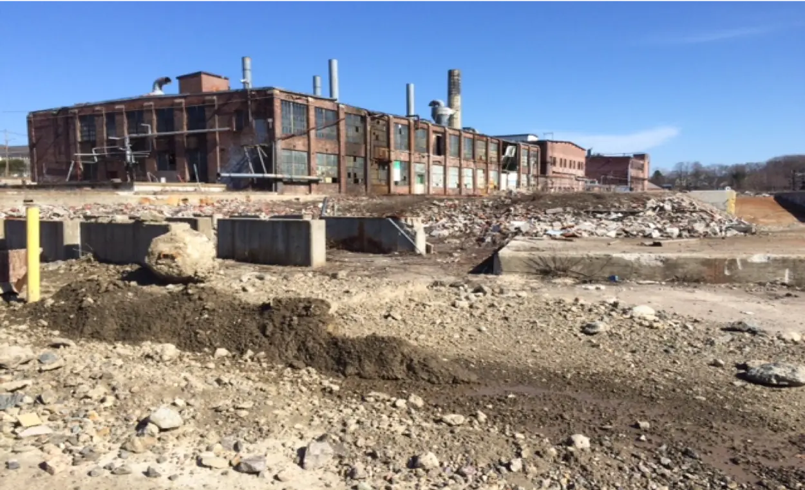
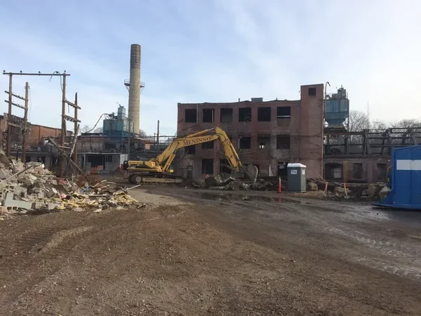
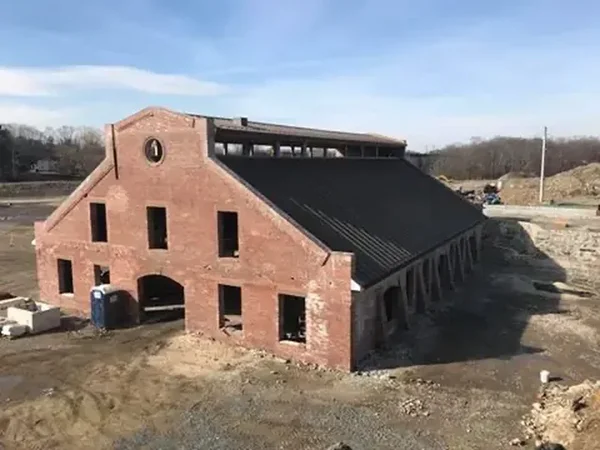
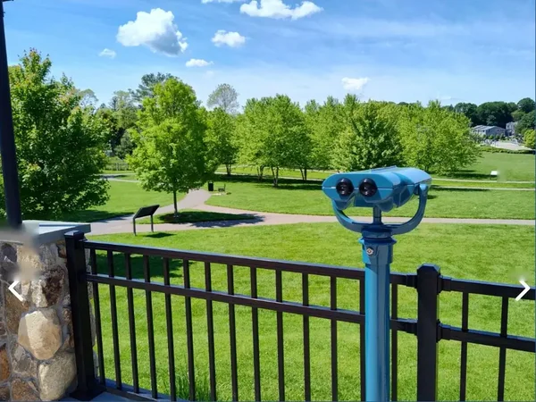
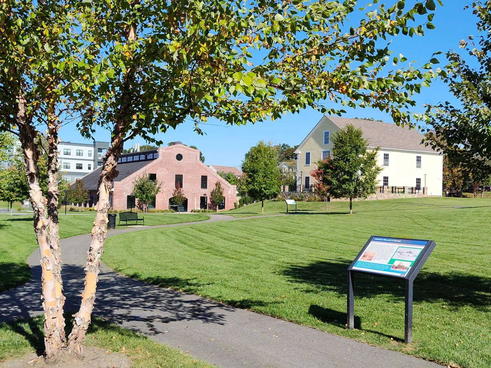

Bankrupt. Rezoned.
Rebuilt.
Two centuries of industry.
In 1801, at age 65, Paul Revere risked his entire fortune to build a copper rolling mill on this stretch of land along the East Branch of the Neponset River — the first copper rolling mill in America. Within two years his copper was sheathing the dome of the Massachusetts State House and the hull of the USS Constitution. He moved his bell foundry to Canton in 1804, and one of those bells still hangs in Canton's First Parish Unitarian Universalist Church today, installed in 1824 and ringing for two hundred years.
A century after Revere, the Plymouth Rubber Company took over the site and ran it through most of the 1900s. By 2006, Plymouth Rubber was bankrupt. The factories were abandoned. The land was contaminated. Two Revere-era structures — the 1850 Copper Rolling Mill and the 1845 Draft Horse Barn — still stood among the ruin, but they were unreachable, unused, and falling apart.
This was the situation Canton inherited.
The funding that made it possible.
Almost any path forward required money the town didn't have. Environmental remediation alone would run into the millions; preserving open space, restoring two historic buildings, and shaping the development of 300-plus residential units would require many millions more.
In 2012, after two earlier failed attempts, Canton finally adopted the Community Preservation Act — a state program that lets municipalities raise dedicated funds for open space, historic preservation, and affordable housing. Lisa Lopez championed the third and successful campaign. Without the CPA in place, what might have become unattractive density for developers to reap every available dollar of profitability from the site, was instead a new neighborhood that balanced housing diversity with much needed green space for passive recreation and community events.

Ambitious, layered, passed.
Behind the 2015 Town Meeting vote was intense public-private negotiation, led on the town side by Canton's Select Board. The agreement that came before Town Meeting was layered and ambitious:
- The town would purchase 7 acres of open space for a public park, with a conservation restriction in perpetuity, through a CPA enabled bond supported by the Community Preservation Committee.
- Another 2 acres, donated by the private developer, Canton Holdings, LLC, would preserve the two Revere-era buildings — the 1850 Copper Rolling Mill and the 1845 Draft Horse Barn — to be restored as a destination restaurant and a public museum.
- The private developer would clean up the contaminated land and, with its real esate partners, build 300-plus units of housing — rental and owner-occupied — with more than 100 units reserved for residents 55 and older, and 35 of them qualifying as “affordable” units with below market rents/purchase prices.
- Community dog parks would be included.
At the time of the Town Meeting vote and the open space purchase, Lisa chaired Canton's Community Preservation Committee — the body responsible for allocating the CPA funds that made the town's acquisition of the 7 acres of open space possible.
A decade of rebuilding.
What followed was a decade of demolition, environmental cleanup, restoration, and construction. Contaminated soil was removed. Army Corps of Engineers diversion channel was restored. The box culvert that housed the original Canton River tributary was rebuilt. The Copper Rolling Mill and the Draft Horse Barn — both more than 170 years old, both falling apart — were rebuilt brick by brick, clapboard by clapboard.
Lisa stayed involved throughout. She chaired the Open Space Committee of the Revere Heritage Commission that worked with the landscape architect to design the seven-acre public park. She provided essential advice and counsel for the formation of the community dog parks. She is currently a member of the Paul Revere Advisory Council and a personal donor to the private fundraising effort.



A neighborhood reborn.
The 1850 Copper Rolling Mill now houses Northern Spy, a New England destination restaurant built around a wood-fired hearth. The 1845 Draft Horse Barn now houses the Paul Revere Museum of Discovery & Innovation — MoDI — with three floors of interactive exhibits. MoDI is a STEAM-centered museum of innovation that uses Paul Revere — not as patriot symbol but as working genius - to teach visitors how transformative ideas actually get made into products. History is the vehicle. The destination is a way of thinking.The The seven-acre public park, known today as the Revere Green, draws walkers, dog owners, families, and event-goers from across the region.
In May 2026, the Revere Green was dedicated to Victor D. Del Vecchio — Lisa's husband and a longtime member of Canton's Select Board, and chair of the Revere and Son Heritage Trust Corp — in recognition of more than a decade of leadership on the project.
The 300-plus residential units, both rental and owner-occupied, have brought new neighbors within walking distance of downtown businesses, and the over-55 units have given longtime Canton residents a place to downsize without leaving town.
